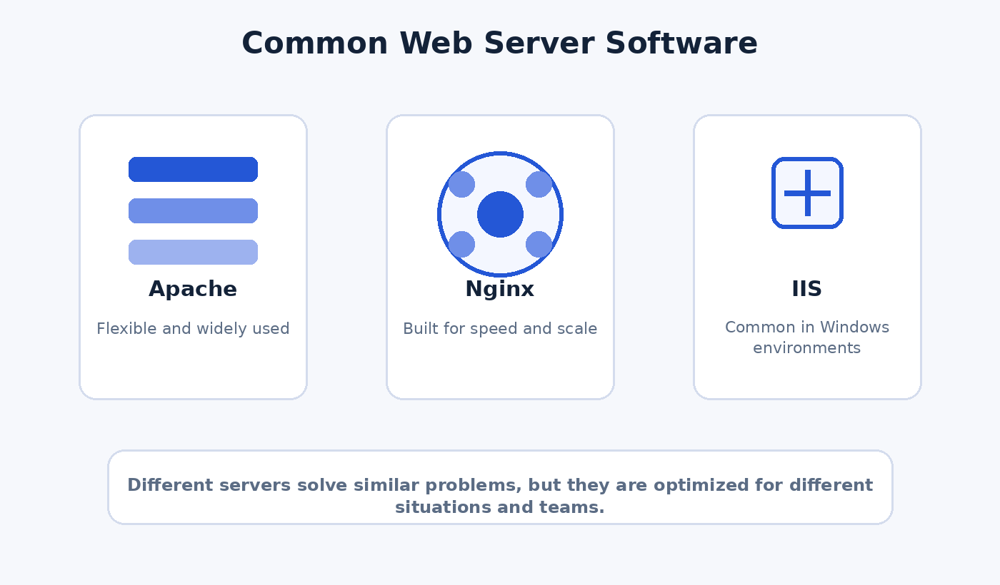

A web server can mean either hardware or software. The hardware stores resources and stays connected to the network. The software listens for requests and decides how those requests should be handled.
Hardware vs software
The same term gets used in two related ways.
Hardware view: a machine that stores website files and remains available to clients over the internet.
Software view: the program that accepts requests, applies rules, and returns content or errors.
In modern hosting, both ideas still matter, even when the physical machine is hidden behind cloud services.

Different server software solves similar jobs, but each one is known for different strengths.
Important server software
These examples show how server design changed over time.
NCSA HTTPd: an early server that helped shape dynamic content support through CGI.
Apache HTTP Server: open source, highly modular, and historically one of the most influential servers on the web.
Nginx: known for performance, scalability, reverse proxy use, and event-driven design.
IIS: Microsoft's server platform, often used in Windows-based and enterprise environments.
Static content vs dynamic content
Servers often handle both kinds of output.
Static content: files served directly, such as HTML, CSS, images, or videos.
Dynamic content: output generated by an application, API, or script at request time.
A modern website often uses both. The server might send a static image while also proxying a dynamic API request to another application.
Server comparison
Server
Known for
Common use
Apache
Open source flexibility and a very large module ecosystem
Shared hosting, legacy systems, and highly customizable setups
Nginx
Handling many simultaneous connections efficiently
High traffic sites, reverse proxy work, load balancing, and caching
IIS
Windows integration and enterprise administration tools
Corporate, internal, and government web infrastructure
What modern web servers commonly do
Today's servers are more than file cabinets for HTML.
Serve content
They return HTML, CSS, JavaScript, images, video, and downloads.
Handle HTTPS
They manage encrypted traffic so data can move securely between users and sites.
Proxy requests
They can pass traffic to application servers, APIs, or services behind the front door.
Improve performance
They can cache files, compress responses, and balance traffic across multiple systems.
Why reverse proxies matter
One server does not always do every job alone.
A reverse proxy sits in front of one or more application servers. It receives requests from users and forwards them to the right back end service. This design helps with traffic management, security, scaling, and load balancing.
Where servers fit today
Cloud platforms changed deployment, not the core role.
Even with cloud hosting and content delivery networks, someone still has to receive requests, decide where they go, and return the right resources. The basic job of the web server still sits at the center of modern web architecture.
Why web servers still matter
As websites became applications instead of simple documents, servers became traffic managers, security checkpoints, caching layers, and connectors to back end systems. That makes them just as important now as they were in the early web, even if most users never see them directly.